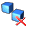
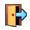

What is the Metadata Extraction Tool
The metadata extraction tool is a tool built by Sytec Resources for the National Library of New Zealand Te Puna Mātauranga o Aotearoa (National Library) to process digital master files and extract metadata about those files. Metadata is descriptive information about an object - not the object itself. In this case metadata information about a Image would be things like size, colours, resolution, etc… There are two output formats that an output metadata file can take
- Native form. A XML (Extensible Mark-up Language) file based on a DTD (Document Type Definition) that reflects all information available from the digital master.
- National Library Preservation Metadata Data Dictionary - nlnz-presmet.xsd. This is the primary format.
For more information about any of these file formats see the Solution Architecture or Software Architecture documents for this extraction tool. Note: The POC output types of demta.dtd and pmeta.dtd have been deprecated, they are not supported in the production tool.
Starting the Tool
To start the tool, firstly make sure that JAVA_HOME is set correctly.
Then change into the Metadata Harvester's directory and run metadata.bat (Windows) or metadata.sh (Linux/Unix).
Graphical User Interface
The software will be driven by a graphical user interface and a command line interface. Both will access the underlying extraction tool in an identical way (using the same configuration). The graphical user interface will allow the user to select files for processing and process them according to a predefined configuration. The predefined configurations (see: configuration) will specify the output format and the output directory that will hold the extracted files. The user interface is designed to be fully compliant with current Win32 best practice for GUIs. One of the features of the User interface is the capability to alert the user to errors that may have occurred during the extraction process.
Key controls of the software:
Create New Object
Allows the user to create a new object. An object is a logical grouping of files and is the first step to creating a list of files to be harvested for metadata.
 Add
Files/Folders to Object
Add
Files/Folders to Object
When the user pressed the "add" button a file dialog will appear to allow the user to select as many files as they wish to process. The files that have been selected will appear in the files list in the middle of the main screen.
Remove Files/Folders from Object
The remove button will remove all selected files from the files table.
 Remove All Files/Folders and Objects from the list
Removes all files/folders and object from the file list.
 Edit
the properties of an Object
Edit
the properties of an Object
The 'Object' folders (the highest level folders) have properties associated with them. The properties editor allows the user to change these.
The dialog you will be presented with looks like the image shown here. You can edit any property of an object using this dialog. You may notice some fields go 'red' while typing - this is because the field validation has determined that the field contents are incorrect.
 Process all of the Objects in the list
Process all of the Objects in the list
The process button will process all files currently in the files list. The results of the processing will be output to the directory specified by the currently selected Config. Any errors will be highlighted with a red exclamation point icon appearing as the icon of the erroneous file. Files that were processed without any errors are given a 'tick' icon and files that are yet to be processed are given plain icon. The Graphical User Interface is multithreaded - this means that processing can take place and the UI does not appear to "lock-up".
View Usage/Error Log
Pops up a log window for usage and error reporting. Logs can be filtered in this window so that only log messages with the log 'level' desired are shown. Old logs may be viewed in this window also with the 'open' log file function.
View Scheduling Window
Pops up the scheduling window to allow scheduling to be queued up to happen at a later time. If processing is scheduled the application will suspend operation until the allotted time.
View Administration window
Pops up the administration window. This is a series of tabs which allow the user/administrator to configure all aspects of the harvesting application. See administration section below.
View simple help
Pops up a window that displays help, Help is not context sensitive and does not go into substantial detail.
 Exit the Application
Exits the application, saving the configuration if you have changed it (users, destination directories, etc…)
Extraction Configuration
The available configurations are listed in a drop down box labelled "Config" these configurations can each have a different output directory, which is indicated immediately to the right of the drop down box.
Destination Folder
The destination folder that output files will be sent. You can change this setting by clicking on the folder icon to the right of the text field. The field itself is not editable.
Profile Used
The profile is the set of parameters to use. Profiles are created and maintained using the administration tool and include settings for which adapters are current and log directory, etc.
When creating an Object or Adding files to an existing object you will be prompted with a dialog to select files or folders. You can select any number of files or folders and add them all to the current object. The recurse option will force the file adding process to traverse all subfolders within a selection. The flatten option will force the adding process to ignore folder boundaries while recursing and add all the files found at an equal level within the current object.
Logging
The logging window displays the current log. You can elect to clear the current log and start it fresh, or filter the current log to only show a certain level of logging.
Critical
The application has had a critical failure, harvesting could not be considered unstable and the application should be restarted.
Error
An error is an application problem or a problem while harvesting metadata that is isolated to the object being harvested. Chances are other objects were unaffected and harvesting can continue.
Debug
Information about program behaviour, there should be very little of these messages in the production system.
Information
Superfluous information about application behaviour. This includes things like usage reporting.
Program Workings
Similar to debug, these messages are closely related to system functions - they may not be very meaningful to most operators, there should be very little of these messages in the production system.
Administration
The administration screens allow configuration of all aspects of the harvesting environment. Administration screens are divided into a number of tabs. While changes are generally saved when OK is selected, some administration tasks are implemented immediately due to their complex nature. This is explained on each tab description below:
General
This screen allows the user to manage profiles and change settings of the currently selected profile. A profile is used to easily store some settings to be used again in the future without having to recreate everything for a future harvesting run. Configuration elements within the profile are the input directory, the log directory and which adapters are currently enabled for harvesting.
Create Profile - Simply type the new profile name in the combo box and select Create and a new profile of that name will be created with the normal default values.
Delete Profile - Select the profile to delete and click the Delete button. It is not possible to delete the last (default) profile.
Input Directory - Select the directory used as the standard directory to look for files to harvest. It is therefore the starting point of any file selection.
Log Directory - Select the directory used for log creation.
 Adapters
Adapters
This screen allows the user to manage which adapters are turned on for the currently selected profile. The user can simply select or deselect adapters and any future harvest will only use the currently selected set.
NOTE: The default adapter cannot be deselected.
 Admin
Tabs
Admin
Tabs
Some of the less common administration tabs are grouped under an Admin tab. An incorrect configuration can cause the Metadata Harvester to fail.
Defaults
The defaults tab allows the selection of certain defaults:
| User | Used as the normal user of the application - ie will be selected when the application is launched. |
| Input Directory | The default input directory used within a profile when a profile is created |
| Log Directory | The default log directory used within a profile when a profile is created |
Users
The users tab allows the administrator to maintain users. Users can added or deleted from the system.
Add User - Click the Add button and enter the name of the new user. All users must have unique names.
Delete User - Clicking the Del button will result in the currently selected user to be deleted.
Mappings
The mappings tab allows the administrator to maintain mappings between Adapter outputs and end-result meta-data schemas. Mappings can be added or deleted from the system using this tab.
 Add
Mapping - Select mapping configuration elements from the
three drop-down boxes and then click the Add button.
Any installed adapter will have an entry in the first drop-down
box. All mapping xslt files in the application XML
directory will be in the second drop-down box. All
configuration schemas will be populated in the third drop-down
box (see Configurations below)
Add
Mapping - Select mapping configuration elements from the
three drop-down boxes and then click the Add button.
Any installed adapter will have an entry in the first drop-down
box. All mapping xslt files in the application XML
directory will be in the second drop-down box. All
configuration schemas will be populated in the third drop-down
box (see Configurations below)
Delete Mapping - Clicking the Delete button will result in the currently selected mapping to be deleted.
Configuration
The configuration tab allows the administrator to maintain configurations. A configuration encapsulates a particular output schema type and is normally tightly bound to a certain Harvester instance.
Add Configuration -Click Add and enter the name, harvester class, and output directory for the new configuration.
Delete Configuration - Clicking the Delete button will result in the currently selected configuration to be deleted.
Adapter Maintenance
The adapter maintenance tab allows the administrator to install new adapters and remove old adapters.
Add Adapter - Click Add and select the jar file that contains the adapter and other associated files (xml schemas and xslt mappings, etc). After clicking install the operation immediately happens and the adapter is now reflected in all other admin screens (adapters, mappings, etc).
NOTE:Choosing cancel from the admin screen itself will not result in the adapter not being installed!
Delete Adapter - Clicking the Delete button will result in the currently selected adapter to be uninstalled from the system. A backup of the original jar installation file will still be found in the system jar directory.
Help
Help is very simple. It is sufficient for basic usage but is neither comprehensive or context sensitive.
Command Line
The command line is executed by running the extract.bat file (under Windows) or extract.sh (under Linx/Unix) that can be found in the installation directory.
extract.bat <arg1> <arg2> <arg3> ...
extract.sh <arg1> <arg2> <arg3> ...
see the java runtime environment documentation for particular arguments that can be made to allocate additional memory and use different JIT compilers.
The command line interface is able to operate in several modes:
1. Help: The help mode produces a screen of information describing the modes and parameters that are available.
2. Self-discovery: Self-discovery can produce a screen that can inform the user about the configurations installed in the extraction tool as well as information on available xslt maps and the types of adapters installed.
3. Extraction: Extraction is the mode that actually causes the tool to parse files and output results. You must tell the extraction tool which configuration to use (by name, use quotes for names with spaces) and the directory to find the digital master files to be processed.
The command line interface is not multithreaded, meaning it will block until finished.